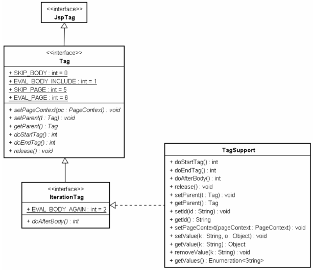
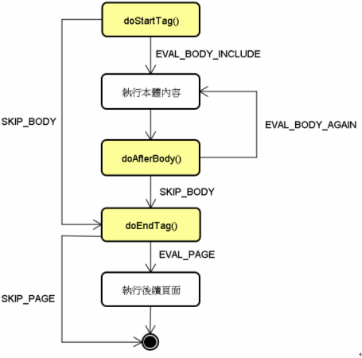

|
|
在實作Tag介面相關類別時，依不同的時機，要定義不同的doXxxTag()方法，並依需求傳回不同的值。doXxxTag()方法實際上是分別定義在Tag與IterationTag介面上的方法，它們的繼承與實作架構如下所示：  類似SimpleTag介面，Tag介面繼承自JspTag介面，它定義了基本的Tag行為，像是設定PageContext實例的setPageContext()、設定外層父標籤物件的setParent()方法、標籤物件銷毀前呼叫的release()方法等。 單是使用Tag介面的話，無法重複執行本體內容，而必須使用子介面IterationTag介面的doAfterBody()（之後會看到如何重複執行本體內容）。TagSupport類別實作了IteratorTag介面，對介面上所有方法作了基本實作，所以只需要在繼承TagSupport之後，針對必要的方法重新定義即可。 當JSP中遇到TagSupport自訂標籤時，會進行以下的動作：
首先注意到第1點與第6點，沒錯！Tag實例是可以重複使用的（SimpleTag實例則是每次請求都建立新物件，用完就銷毀回收），所以自訂Tag類別時，要注意物件狀態是否會保留下來，必要的時候，在doStartTag()方法中，可以進行狀態重置的動作。別以為可以使用release()方法來作狀態重置，因為release()方法只會在標籤實例真正被銷毀回收前被呼叫。 接著來詳細說明第5點。JSP頁面會根據標籤處理器各方法呼叫的不同傳回值，來決定要呼叫哪一個方法或進行哪一個動作，這個直接使用流程圖來說明會比較清楚：  doStartTag()可以回傳EVAL_BODY_INCLUDE或SKIP_BODY。如果傳回EVAL_BODY_INCLUDE則會執行本體內容，而後呼叫doAfterBody()（就相當於SimpleTag的doTag()中呼叫了JspFragment的invoke()方法）。如果不想執行本體內容，則可傳回SKIP_BODY（就相當於SimpleTag的doTag()不呼叫JspFragment的invoke()方法），此時就會呼叫doEndTag()方法。 這邊暫時不討論doAfterBody()方法的傳回值，因為doAfterBody()預設傳回值是SKIP_BODY，如果不重新定義doAfterBody()方法，無論有無執行本體，流程最後都會來到doEndTag()。在doEndTag()中，可傳回EVAL_PAGE或SKIP_PAGE。如果傳回EVAL_PAGE，則自訂標籤後續的JSP頁面才會繼續執行，如果傳回SKIP_PAGE就不會執行後續的JSP頁面（相當於SimpleTag的doTag()中丟出SkipPageException的作用）。 實際上，由於TagSupport類別對IterationTag介面作了基本實作，doStartTag()、doAfterBody()與 doEndTag()都有預設的傳回值，依序分別是SKIP_BODY、SKIP_BODY及EVAL_PAGE，也就是預設不處理本體，標籤處理結束後 會執行後續的JSP頁面。 實際上在Tomcat中，如果觀看JSP轉譯後的Servlet原始碼會發現，只要doStartTag()的傳回值不是SKIP_BODY，就會執行本體內容並呼叫doAfterBody()方法。doEndTag()只要傳回值不是SKIP_PAGE，就會執行後續的JSP頁面。 |